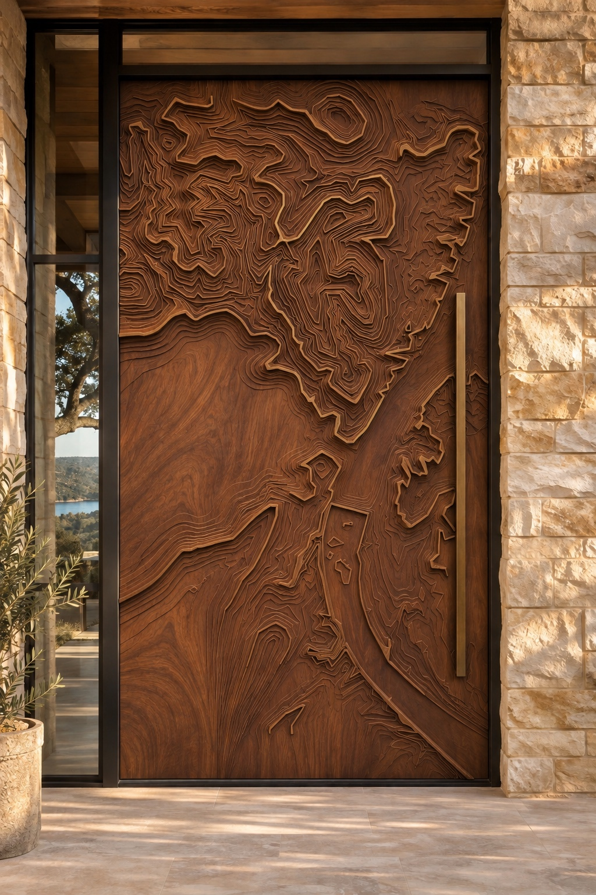
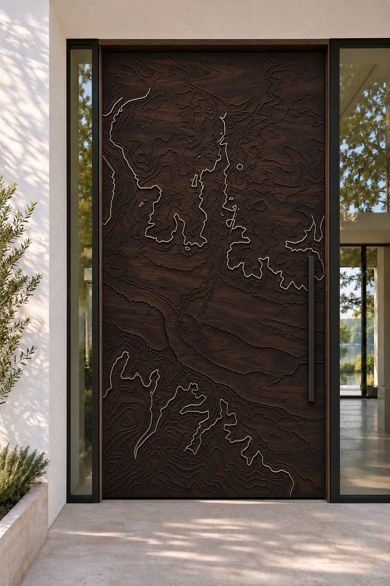
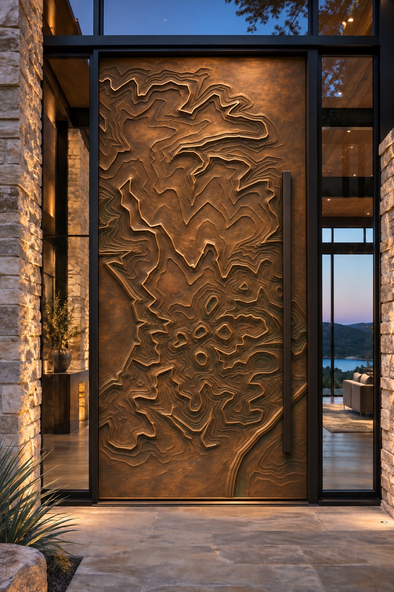
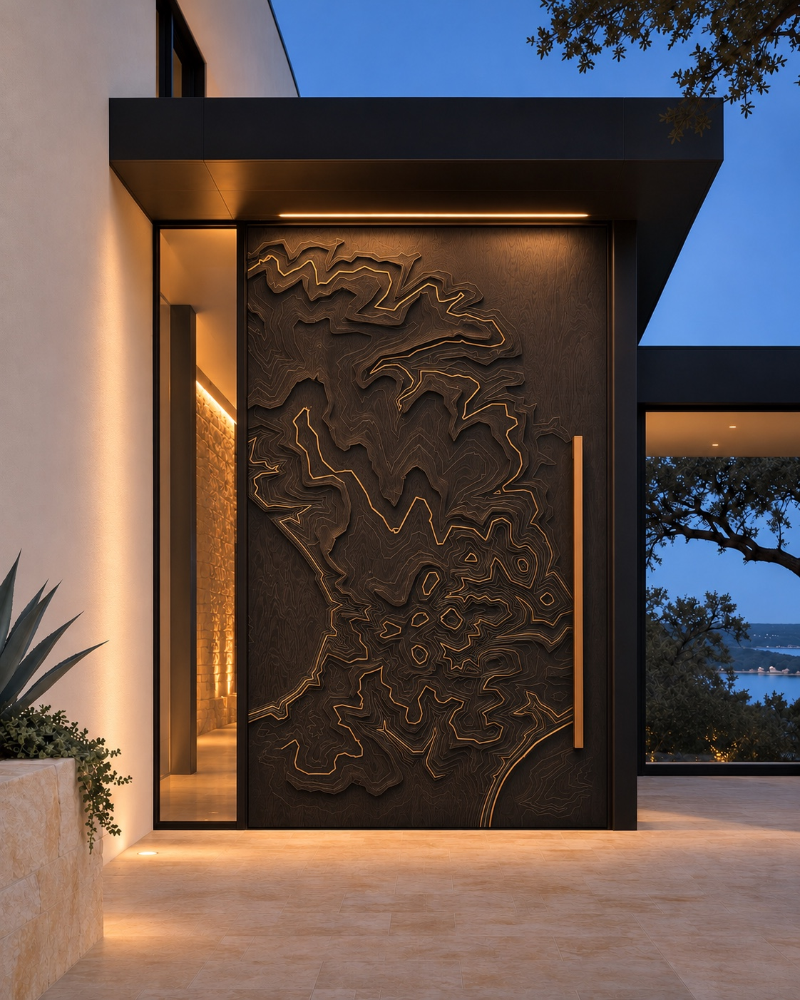
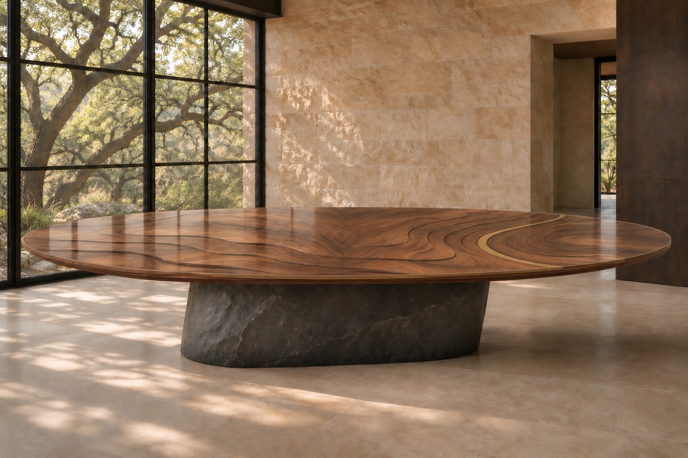
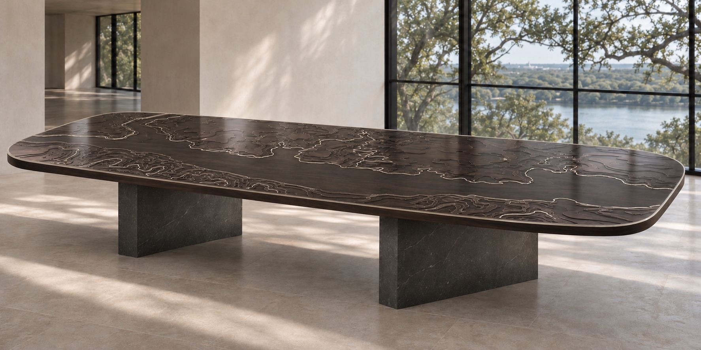
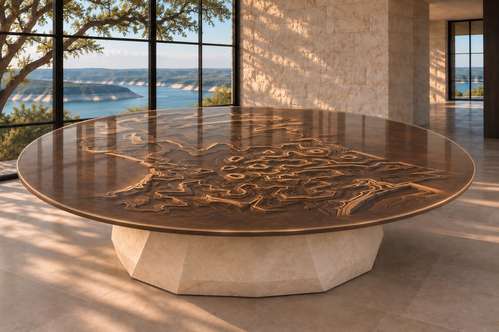

I Walnut · aged brassWestlake · Lake Austin
The Bend
Nested ridges, sheltered rises, and the open fall toward Lake Austin give The Bend its unmistakable Westlake character.
- Study area
- Westlake ridge
- Material study
- Walnut · aged brass
30Ninety7°
Architectural works · Austin, Texas
Monumental doors and sculptural tables drawn from the contours of Westlake and the waters that define Austin.
A new threshold for the Hill Country
30 Ninety 7° translates the ridges, escarpments, and waterlines of Central Texas into functional works of art. Each piece begins with local topography, then moves through material, proportion, engineering, and handwork until it belongs to the architecture around it.
American walnut
Depth, warmth, and grain that holds a carved line.
Texas limestone
The quiet counterweight to a monumental opening.
The founding collection
Every line begins with the Hill Country and waterways we love. The ridges of Westlake, the banks of Lady Bird Lake, and the bluffs of Lake Travis are captured faithfully, then shaped into doors and tables made for remarkable homes.

I Walnut · aged brassWestlake · Lake Austin
Nested ridges, sheltered rises, and the open fall toward Lake Austin give The Bend its unmistakable Westlake character.

II Blackened walnut · nickel silverAustin · Lady Bird Lake
The broad waterway, irregular banks, and the rising land to the south preserve the character of Lady Bird Lake in every carved line.

III Living bronze · mineral patinaLakeway · Lake Travis
Compact bluffs, branching slopes, and sudden changes in terrain make The Escarpment unmistakably Lake Travis.
True to place · The contours preserve the character of the landscape that inspired them. Each commission is then composed for its own opening, scale, material, and light.

Collection III · The Escarpment
The entrance becomes the home’s anchor. Material, light, landscape, and architecture resolve at the threshold, completing the facade and carrying warmth through the entire house. Every person who enters gets to experience the work in the most direct way possible: by walking through it.
Concept imagery shown. Every commissioned piece is developed for its specific site and opening.
From land to threshold
Choose the water, ridge, property, or stretch of land that holds meaning.
Shape those faithful contours into a balanced surface made for the door’s proportions.
Resolve scale, weight, pivot hardware, climate exposure, and the architect’s opening details.
Carve, finish, fit, and refine until the piece reads as both art and architecture.
Tables of place
Three beloved local landscapes become three distinct pieces of functional art. Each table holds the lines of the Hill Country beneath a perfectly level, crystal-clear resin surface made for everyday use.
Request a table study
IWestlake · Lake Austin
An oval walnut dining table with Westlake terraces and a brass waterline preserved beneath a perfectly level clear-resin surface.

IIAustin · Lady Bird Lake
A long blackened-walnut table preserving the broad lake corridor and silver contours beneath a seamless satin-polished resin plane.

IIILakeway · Lake Travis
A round living-bronze table with Lake Travis bluff rings suspended beneath clear resin on a faceted Texas-limestone pedestal.
The studio
Eric Farewell · Founder
Eric is an Austin-based founder, author, and lifelong appreciator of art. He sees the door as the first story a home tells, and the Hill Country as a visual language worth honoring with precision.
Kovid Mathur · Artisan & engineer
Kovid is the artisan and engineer behind the doors and tables. His work brings together material intelligence, structural thinking, and the patient hand required to turn contour into form.
30 Ninety 7° is their shared exploration of what happens when local land, art, and exacting engineering meet at the entrance to a remarkable home.
Private commissions · Austin
Tell us about the home, the opening, and the part of Central Texas you want the piece to remember.